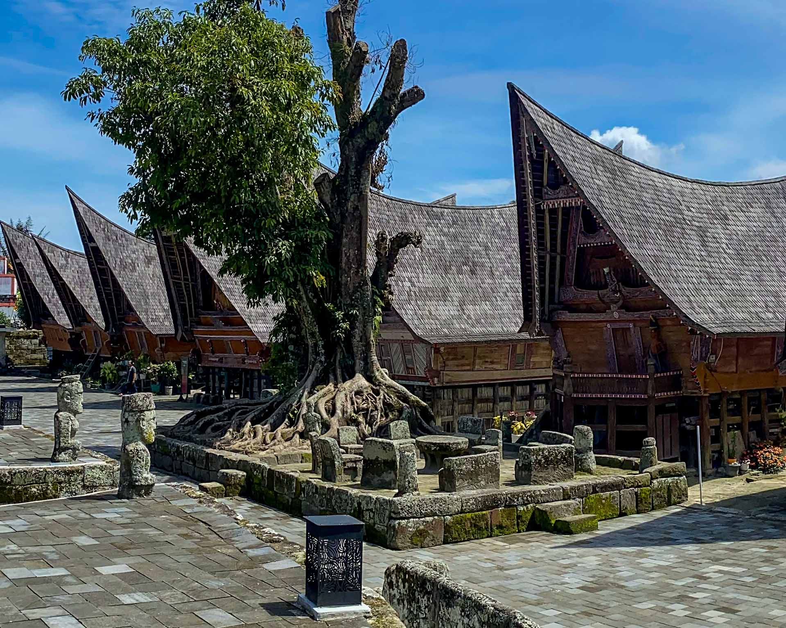
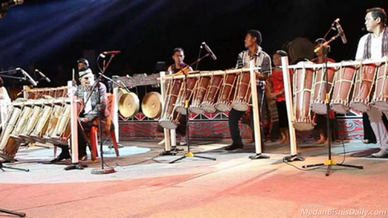
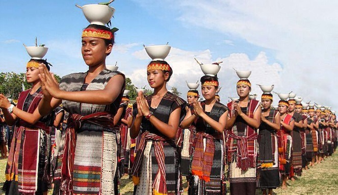
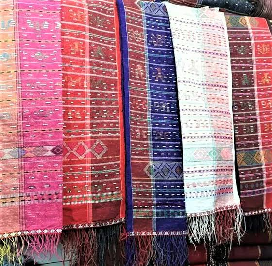
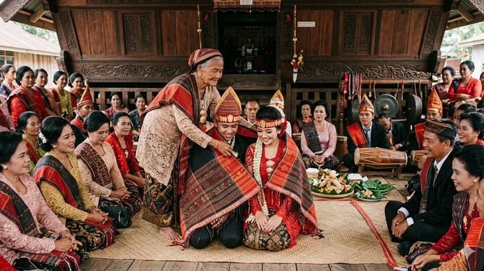
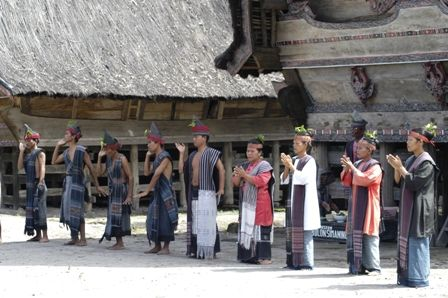

Batak Culture
Discover the traditions, philosophy, arts, architecture, and living heritage of the Batak people.
Every facet of Batak heritage
From carved houses to woven cloth, each of these threads runs through nearly every Batak ceremony.

Batak Houses
Rumah Bolon and the jabu system — architecture built to encode family order.
Learn More
Traditional Music
Gondang drum ensembles and the sarune, played at every major ceremony.
Learn More
Traditional Dance
Tor-Tor — symbolic hand movements performed in step with gondang rhythm.
Learn More
Ulos
Hand-woven cloth given at every rite of passage, each pattern carrying its own meaning.
Learn More
Dalihan Na Tolu
The three-legged kinship order that structures every Batak ceremony and social role.
Learn More
Traditional Ceremony
Weddings, mourning, and blessings — all structured by the Dalihan Na Tolu order.
Learn MoreA Batak history timeline
Select an era to read what defined it.
Six Batak clans
Tap any clan to open its history — every Batak marga traces back to one shared ancestor, Si Raja Batak.
Houses built to hold an order
Two structures, one shared idea — architecture built to hold a family's order.
The Ulos Gallery
Hover or focus a photo to read what it's traditionally given for.
The three-legged hearth
Every Batak ceremony runs on this triangle of kinship roles. Click a corner to read what it means.